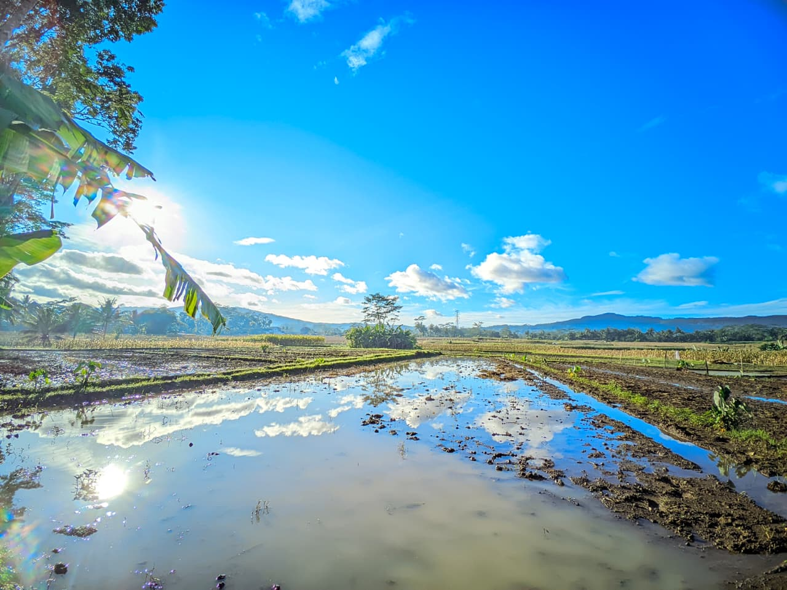
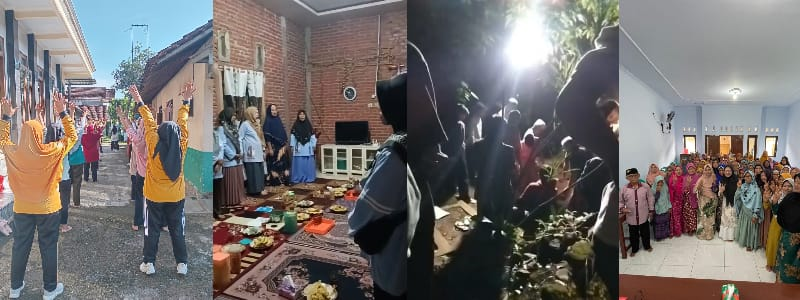
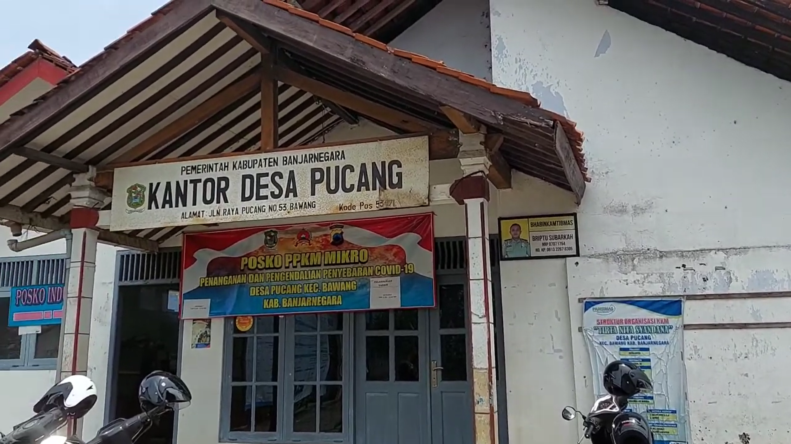
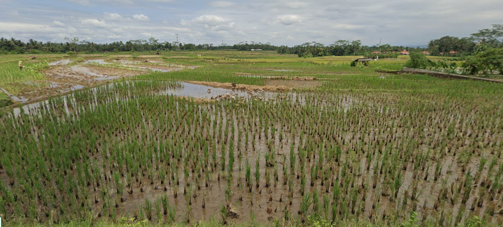
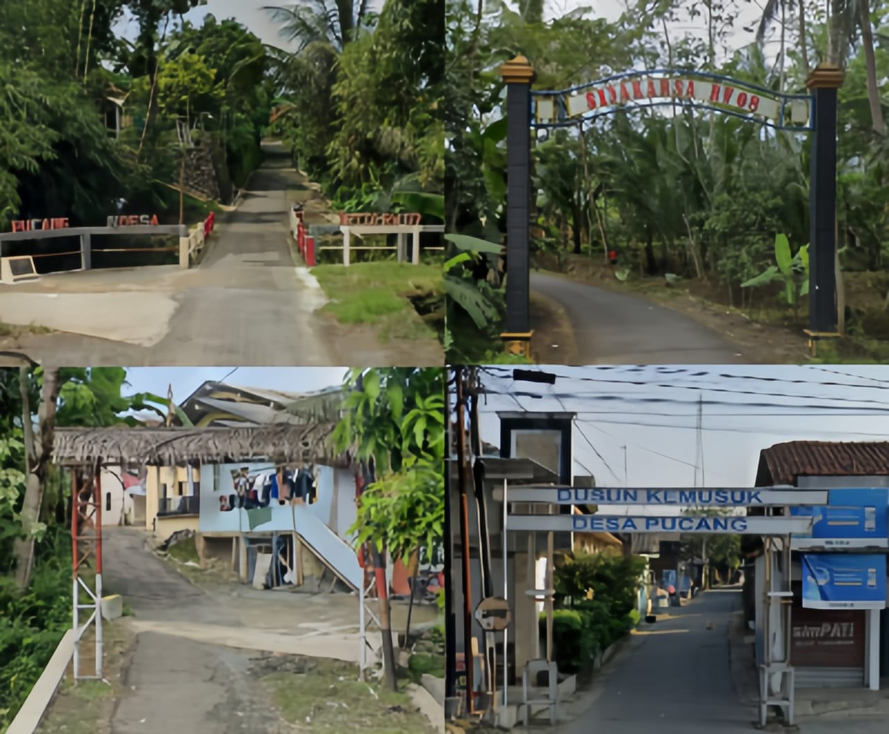

Dokumentasi
Galeri Desa





Video Profil Desa
⚠️ Ganti URL embed di atas dengan link video profil desa
Desa yang asri, maju, dan sejahtera di jantung Kecamatan Bawang Bersama membangun desa untuk masa depan yang lebih baik.
Tentang Kami

Asal-usul nama Desa Pucang berasal dari banyaknya pohon pucang atau pohon jambe yang mendominasi wilayah tersebut sebelum akhirnya diubah menjadi kawasan permukiman warga.
Perkembangan Desa Pucang saat ini berfokus pada transformasi digital, penguatan sektor pertanian, peningkatan infrastruktur jalan, dan integrasi fasilitas pendidikan nasional.
"Terwujudnya Desa Pucang yang Maju dan Sejahtera"
Pemerintahan
Struktur Organisasi Pemerintah Desa Pucang
Data Kependudukan
Total Penduduk
Laki-laki
Perempuan
Kepala Keluarga
Ekonomi Lokal
Berbagai usaha mikro, kecil, dan menengah yang ada di Desa Sukamaju
Dendawet Pucang (@dendawet_pucang): UMKM minuman kekinian yang populer dan memiliki gerai strategis di Jalan Raya Pucang tepat di depan Pasar Pucang UMKM Banjarnegara - Instagram.
Rumah Produksi Tempe Mbah Sarwono: Terletak di Desa Pucang RT 03/RW 07, usaha ini merupakan salah satu penggerak ekonomi warga setempat yang berfokus pada produksi tempe higienis Penerapan Produksi Bersih pada Produksi Rumahan Tempe ....
Aneka Cemilan dan Keripik Tradisional: Kelompok usaha mikro rumahan yang memproduksi kudapan khas Banjarnegara seperti keripik, peyek, dan seriping.
Kelompok tani yang memproduksi hasil pertanian organik dan ramah lingkungan.
Layanan potong rambut dan perawatan kecantikan dengan harga terjangkau.
Dokumentasi




⚠️ Ganti URL embed di atas dengan link video profil desa
Hubungi Kami
Blater, Pucang, Kec. Bawang, Kab. Banjarnegara, Jawa Tengah 5347
+62 878-6723-0037
Senin – Jumat: 08.00 – 16.00 WIB